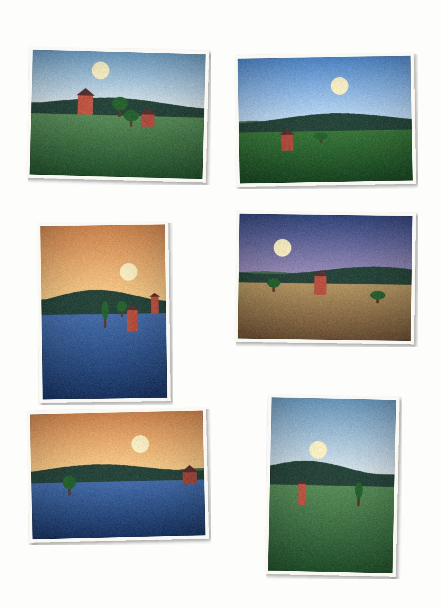
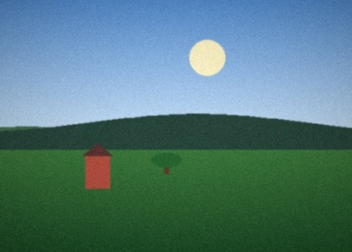
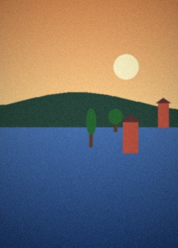
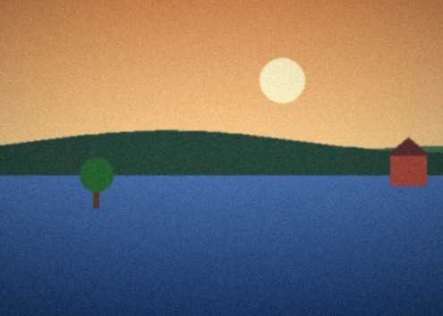
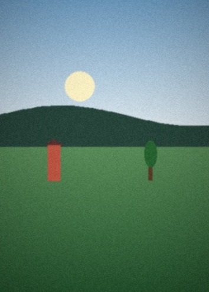
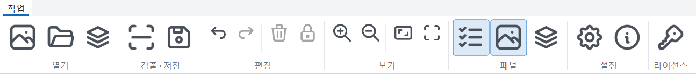

여러 검출 방식으로 사진 부분만 찾고, 결과가 이상하면 스스로 다시 시도합니다. 마음에 안 드는 박스는 끌어서 바로 고칩니다.
여러 검출 알고리즘으로 페이지에서 사진 부분만 찾고, 기울기와 원근을 바로잡아 반듯하게 폅니다.
옆으로 누운 사진은 얼굴 방향을 보고 바로 세워 저장합니다(선택 기능, 얼굴이 없으면 그대로).
색이 바랜 사진의 색·대비를 살리고 먼지 자국을 줄입니다. 끔 / 자동 / 항상 중에서 고릅니다.
수십~수백 쪽을 한꺼번에, 병렬로. 미심쩍은 페이지는 "검토 필요"로 표시하고 보고서(CSV)를 남깁니다.
기본은 원본 1:1, 스캔 dpi 유지. 필요하면 긴 변 px 이나 % 로 줄이고 dpi 를 지정합니다.
사진도 정보도 어디에도 전송되지 않습니다. 정품 활성화도 인터넷이 필요 없습니다.
페이지째 스캔한 한 장에서 사진 6장을 찾아 반듯하게 펴 한 장씩 만든 예시입니다.





이름_01, 이름_02 …)예시 이미지는 설명용으로 만든 가상의 그림입니다. 실제 결과는 스캔 상태에 따라 다를 수 있습니다.
스캔 파일(JPG · PNG · TIF · BMP)을 열거나 폴더째 불러옵니다.
버튼 한 번이면 사진마다 박스가 생깁니다. 어긋난 박스는 모서리를 끌어 고칩니다.
형식을 고르면 한 장씩 저장됩니다. 많은 페이지는 배치 처리로 한 번에.
언어, 밝은/어두운 테마, 아이콘 스타일. 현재 테마를 파일로 저장해 색을 고치면 나만의 테마가 됩니다.


| 파일 | AlbumPeel_Setup_1.0.0.1.exe (약 46 MB) · 버전 1.0.0.1 |
|---|---|
| 링크 | [다운로드 링크 — 호스팅 확정 후] · SHA-256 [게시 직전에 표기] |
| 라이선스 | 체험(10일, 저장 3쪽) → 정품 1,000쪽 이용권 29.5 USD |
보호 처리된 실행 파일을 일부 백신이 오탐할 수 있습니다. 허용 또는 예외 등록 후 사용하고, 계속되면 문의해 주세요.
정품은 PC 1대 전용이며 PC 를 바꿀 수 없습니다(PC 고장 시 이용권당 1회 복구). 자세한 조건은 정책·정품 라이선스와 이용약관.
빈 곳을 끌어 새 박스를 그린 뒤 네 모서리를 사진 모서리에 맞추면 됩니다. 자주 그렇다면 사진 사이를 조금 더 띄워 스캔해 보세요.
바뀌지 않습니다. 스캔 파일은 읽기만 합니다.
쓰는 데도, 활성화에도 필요 없습니다.
이용권은 PC 한 대 전용이며 PC 를 바꿀 수 없습니다. PC 가 고장 난 경우에 한해 이용권당 1회 복구할 수 있습니다. 자세한 조건은 구매·라이선스.
albumpeel@gmail.com 으로 보내 주세요(활성화 요청에는 PC 코드 포함). 공지와 소식은 게시판에 올립니다.